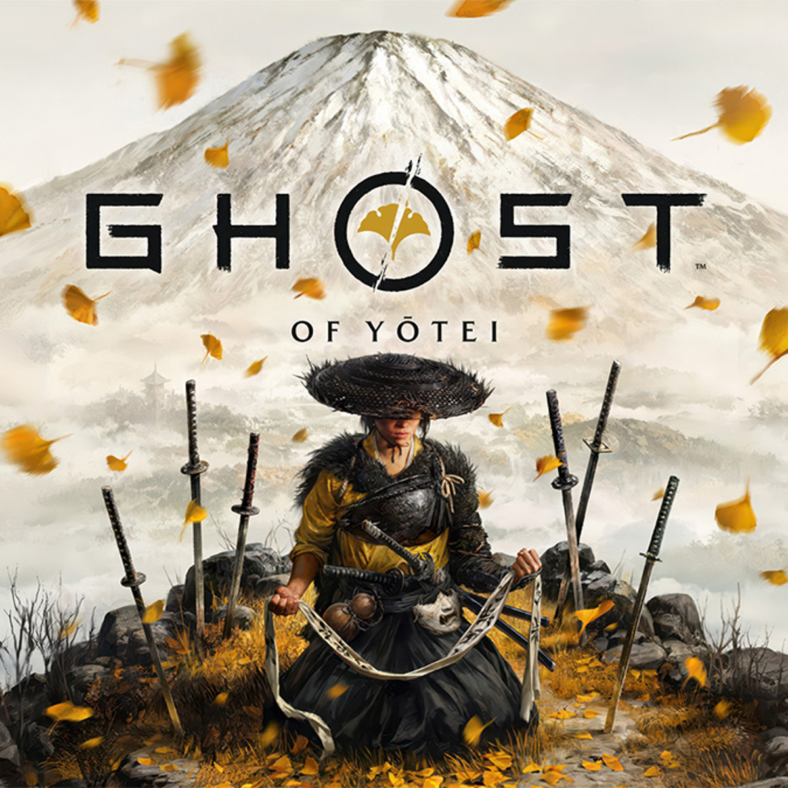
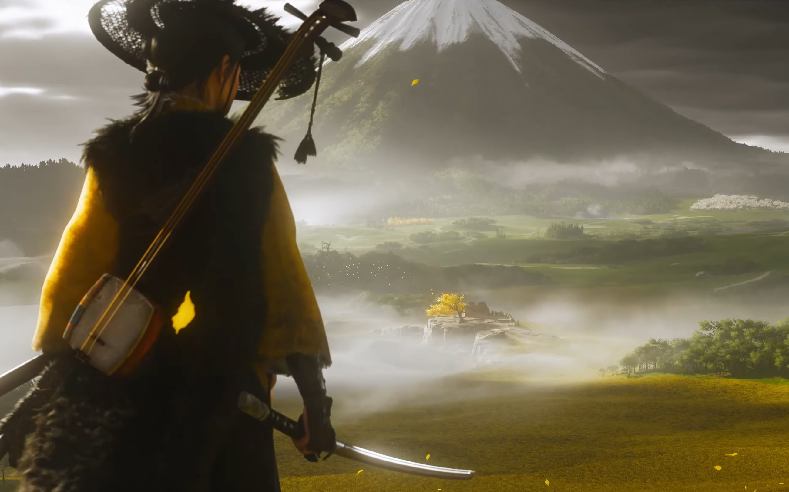

O Grze Ghost of Yotei
Ghost of Yotei to gra akcji inspirowana japońskimi legendami i honorem samurajów. Gracz wciela się w wojownika, który przemierza okolice góry Yotei, aby odkryć tajemnicę zaginionego ducha.
Fabuła
Opowieść skupia się na poszukiwaniu prawdy o samuraju, który zniknął w tajemniczych okolicznościach. Jego duch nawiedza góry, a gracz musi zadecydować o jego losie.
Mechanika Gry
- Walka kataną i łukiem
- Skrytość i honorowe pojedynki
- Wybory moralne wpływające na zakończenie